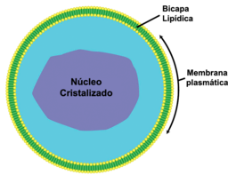

Sumário
O citoplasma é uma região da célula localizada entre o núcleo e a membrana plasmática. Ele é composto por um líquido viscoso e transparente chamado de citosol. O citosol possui uma consistência mais grudenta no contorno do citoplasma. Já na parte central da célula, onde está situado o endoplasma, apresenta uma consistência mais fluida. O citoplasma é a região onde estão imersas todas as organelas, água, aminoácidos, nutrientes energéticos, proteínas e íons.
PEROXISSOMO
 Fonte: Rock 'n Roll, CC BY-SA 3.0, via Wikimedia Commons